Introducción
El Test de Baade es un método cuyo objetivo inmediato es la determinación del radio medio de las estrellas variables cefeidas. Sin embargo, en los siguientes párrafos veremos cómo su importancia trasciende la incumbencia de quienes estudian estos objetos, ya que la obtención de tal información es crucial en la determinación de sus distancias. Es un eslabón vital del sistema de calibración de métodos que establece la escalera de distancias cósmicas, dándonos una idea del tamaño del universo que habitamos: inquietud intrínseca del hombre, motivación inagotable de su maravilla y reflexión.
Contexto
No hay dudas de que, parafraseando al filósofo presocrático Heráclito, lo único permanente es el cambio. Y no sólo es permanente sino que se extiende a cada componente del universo, a tal punto que puede decirse que lo que existe es lo que tiene la capacidad de mutar. Por supuesto, las estrellas no son la excepción: son un sistema dinámico que evoluciona y cambia drásticamente a lo largo de sus millones de años de vida; de manera que es natural pensar que sus magnitudes, como el resto de sus propiedades, varían con el tiempo. Teniendo en cuenta esto, habrá que ser cautos al decir a qué se le llama estrella variable. Sólo se da este nombre a las estrellas cuyas magnitudes varían considerablemente en la escala de tiempo de una vida humana media.
Las primeras observaciones que se conocen de objetos de esta especie corresponden al siglo XVI. En el año 1572, el célebre astrónomo Tycho Brahe descubrió una estrella nueva en la constelación de Casiopea que, según se comprobaría siglos más tarde, era una supernova de tipo Ia; por otro lado, en 1595 un astrónomo amateur notó el aumento del brillo de la estrella o Ceti y su desaparición unos meses después. Inesperadamente, mientras pensaba que se había tratado de una nova, la estrella volvió a ser visible recuperando su brillo. En honor a esta resurrección se le dio el nombre Mira, expresión en latín para ‘asombrosa’. Estos hallazgos sacudieron la concepción aristotélica del universo mostrando imperfecciones en el mundo supralunar, y contribuyeron a desatar las intensas discusiones filosóficas que provocarían el gran cambio de paradigma hacia la cosmología copernicana.
Las causas de la variación de las magnitudes de las estrellas variables son de lo más diverso, pero a grandes rasgos pueden separarse en intrínsecas y extrínsecas. Las primeras se relacionan con fenómenos propios, internos de la estrella, como en las pulsantes –con radio variable-, las cataclísmicas –por eventos termonucleares que ocurren ocasionalmente-, y las eruptivas –por eyecciones de masa debidas a fenómenos magnéticos-. Por el contrario, las otras corresponden a efectos externos, como eclipses con sus compañeras, manchas, tránsitos planetarios o microlentes gravitacionales.
De todos los mencionados, el caso que nos ocupa es el de las variables cefeidas, un tipo de estrellas pulsantes llamadas así por δ Cephei, el paradigma de esta clase de objetos. Son en su mayoría estrellas supergigantes de población I; muestran variaciones periódicas en sus magnitudes debido a las expansiones y contracciones radiales cíclicas de sus capas externas, con períodos entre 1 y 70 días y amplitudes entre 0.1 y 2 mag. También, al ritmo de la variación en su brillo, sus líneas espectrales se bambolean de un lado a otro por efecto Doppler, dejando evidencia incuestionable de que son las pulsaciones las que causan la variabilidad. Estos cambios en el tamaño de las cefeidas dan lugar al cambio de sus temperatura efectivas, afectando directamente sus luminosidades pues, como sabemos, L α Teff4 .
Por último, no profundizaremos aquí en el mecanismo físico de las pulsaciones; bastará con aclarar que las temperaturas que presentan las condiciones adecuadas para que éstas tengan lugar se encuentran entre los 5500K y 7500K. Esta es la razón de que las cefeidas estén ubicadas en su característico lugar en la franja de inestabilidad del diagrama HR, como se muestra en la imagen a continuación.
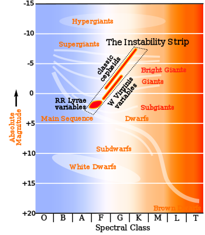
Test de Baade
Ahora estamos en condiciones de describir el método en cuestión. Para realizar el Test de Baade se requiere disponer de dos conjuntos de datos: por un lado de una curva de luz, es decir, magnitud -usualmente en visual- en función de la fase de pulsación, que se obtiene a partir de la reducción de observaciones fotométricas; por otro lado, de una curva de velocidad radial en función de la fase, que se puede inferir de observaciones espectroscópicas midiendo el corrimiento periódico de las líneas espectrales por efecto Doppler. Un ejemplo de estos gráficos es el que sigue, correspondiente a la estrella δ Cephei.
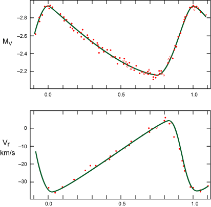
Comencemos, entonces, considerando dos instantes t1 y t2. Por conveniencia, los elegiremos de manera tal que la temperatura de color de la estrella sea la misma en ambos. Sabemos que la diferencia de magnitudes bolométricas entre t1 y t2 está dada por
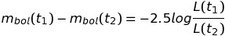
donde L es la luminosidad. Observemos el primer miembro de esta ecuación. Sabemos por la definición de corrección bolométrica que, si Mv es la magnitud visual absoluta,
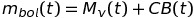
Como hemos elegido t1 y t2 a la misma temperatura, las correcciones bolométricas serán iguales también en esos instantes, de modo que
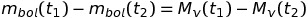
También sabemos que, si mv es la magnitud visual aparente y d la distancia a la estrella
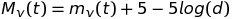
Por lo tanto, tendremos, en última instancia, que
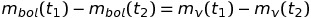
Esto es importante porque la magnitud visual aparente es la que puede obtenerse directamente de las observaciones. Ahora tomemos el segundo miembro de la ecuación del principio. Sabemos que la luminosidad de una estrella está dada por la expresión
.
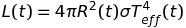
donde R es el radio de la estrella, σ la constante de Stefan-Boltzmann y Teff la temperatura efectiva. Luego, como hemos dicho que la temperatura era la misma en t1 y t2, podemos decir que el cociente será
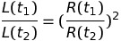
Así, reemplazando lo visto en ambos miembros de la ecuación del principio, obtenemos
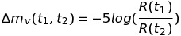
Por último, analicemos el cociente de los radios. Tomando Ro como el radio medio de la estrella, podemos escribir
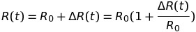
Si recordamos el desarrollo en serie de Taylor de la exponencial cuando x es un número pequeño,
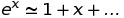
Usando esto, como en general la amplitud de la variación del radio durante la pulsación es mucho menor que el radio medio, podríamos pensar que el radio está dado por
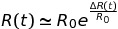
Así que, volviendo a la fórmula que estábamos trabajando, tenemos
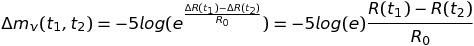
Conservaremos esta expresión para usarla más adelante. Ahora trabajaremos con el otro conjunto de datos, el de las velocidades radiales. La velocidad radial de expansión de las capas externas da la tasa de cambio del radio de la estrella, es decir
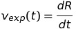
de donde, integrando entre t1 y t2, obtenemos lo siguiente
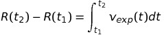
Sin embargo, la velocidad de expansión no es exactamente la velocidad vr que puede obtenerse de las observaciones espectroscópicas, sino que debe multiplicarse por un factor p debido a la proyección sobre la línea de observación de la pulsación. El problema se ilustra en la siguiente imagen.
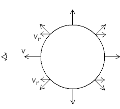
El valor numérico del factor p permanece incierto, aunque puede estimárselo como p=1.3 +/- 0.1. Luego, lo que tenemos es
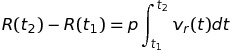
Para terminar, si reemplazamos esto en la fórmula que habíamos conservado para más adelante, obtenemos la expresión final del Test de Baade para el radio medio de una variable cefeida en función de datos que se obtienen de las observaciones
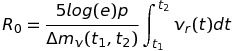
Conclusión
A la hora de reducir efectivamente las observaciones de una estrella cefeida y aplicarle el Test de Baade surgen algunas complicaciones que pueden contaminar la exactitud de los resultados. Por ejemplo, ya mencionamos que el valor del factor p aún no se conoce con precisión; por otro lado debe tenerse un extremo cuidado al elegir los instantes de observación, procurando hacerlo de manera que los índices de color sean iguales; además, las líneas espectrales que se usen para medir la velocidad radial a lo largo del tiempo podrían generarse en distintas capas de la estrella, con profundidades diferentes, siendo esto otra posible fuente de inexactitud; por último, al combinar observaciones fotométricas con espectroscópicas, también podría ocurrir que fueran distintas las profundidades a las que se mide cada conjunto de datos, contribuyendo a empeorar la precisión del resultado final. Sin embargo, varios de los parámetros inciertos pudieron calibrarse mediante otros métodos, logrando hacer, después de todo, del Test de Baade un método razonablemente confiable.
El motivo de que la obtención del radio de las cefeidas sea tan importante es que, como decíamos al principio, permite con algunas consideraciones sencillas calcular sus distancias: una vez conocido el radio, tenemos la luminosidad de la estrella, y de esta forma, como la luminosidad es
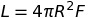
donde F es el flujo total de energía en la superficie de la estrella, de la conservación de la energía deducimos que debe cumplirse
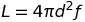
siendo d la distancia y f el flujo de energía en el receptor con que se realizan las observaciones. De allí puede desprenderse fácilmente el valor de la distancia a la estrella en función de cantidades conocidas. Se han podido calcular con este método distancias a estrellas incluso en galaxias vecinas, contribuyendo a la calibración del resto de los métodos de determinación de distancias, y aportando al hombre una mejor comprensión del mundo donde se ubica. Una evidencia más del éxito imparable del pensamiento racional y la investigación científica.
Referencias
Fundamental astronomy. Kartunnen, Hannu.
Introduction to stellar astrophyisics. Böhm-Vitense, Erika.
Handbook of practical astronomy. Roth, Günther D.